FUCK EA
说到EA这家公司，很多人首先想到的可能是他们出品的各种运动游戏，军事题材射击游戏，以极品飞车为首的赛车竞速，也有可能是模拟人生之类的模拟游戏。而在另外一群人的眼里，EA就意味着全程联网、大量的DLC、榨取IP价值、业界毒瘤、全美最差公司、工作室杀手等等负面的评价。
作为一家3A游戏大厂，EA对于游戏业的贡献是不可否认的，《极品飞车》《战地》《龙腾世纪》《模拟人生》这些都在游戏史上留下了非常重要的印记。然而EA在一些行事作风上也深受玩家所诟病，其中最让玩家们深恶痛绝的举动，莫过于他们多次收购小型的工作室，一阵折腾之后再把工作室解散关闭，其中不乏诞生过优秀佳作的产商，这些作品都如雷贯耳《命令与征服》《主题医院》《模拟人生》，几乎贯穿了八九十年代出身的游戏玩家的童年游戏回忆。这也是为什么玩家们一听到EA就一脸嫌弃。
Origin（1983-2002）
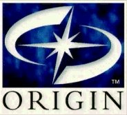
Origin System是一家非常老牌的游戏制作公司，这家公司的创始人理查・盖瑞特对于游戏发展史来说是一个非常重要的人物，他参与设计开发的《创世纪》系列可以说是角色扮演游戏史上最具影响力的作品。他本人也曾经自费以太空游客的身份上过太空。
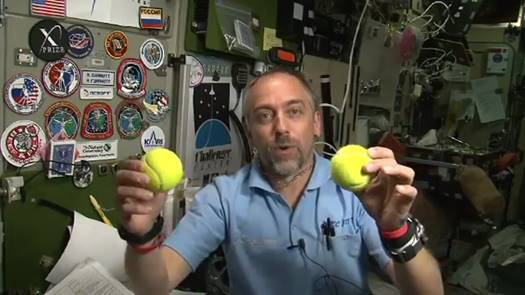
在1994年，Origin被EA收购，并在1997年推出了《创世纪》的网络版本，《网络创世纪》它被誉为图像式MMORPG的鼻祖，并且创造了多项吉尼斯世界纪录，比如说史上运营时间最久的MMORPG以及第一款达到10万玩家的MMORPG。它的成功让EA看到了一条财路，他们无视项目组的反对，赶紧让Origin转型成为一家专门开发线上游戏的公司，《网络创世纪2》以及《哈利波特Online》等项目迅速上马。
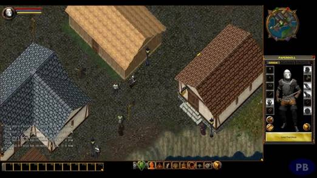
压缩工期导致了《创世纪9》在口碑的失利，这又给EA泼了一记冷水，也导致了几个网游项目的流产。理查・盖瑞特也离开了Origin，2004年工作室宣布关闭，留下了《创世纪10奥德赛》这部未完成的遗作。
现在大家也依然能够听到Origin这个名字，但是这个数字游戏平台已经和当年那个工作室无关了。而创始人理查・盖瑞特离开EA之后曾经还在韩国网游大厂NCsoft待过一阵，并制作了在亚太地区也大受欢迎的网游《天堂》，不过后来他们还打了官司，这些就后话了。
Bullfrog（1987-2001）
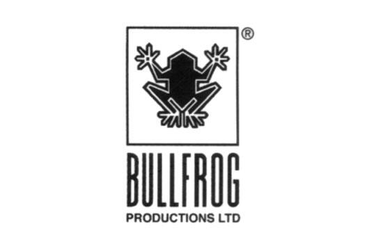
牛蛙工作室对很多出生于八九十年代的玩家来说应该不陌生了，《暴力辛迪加》、《上帝也疯狂》、《主题公园》、《地下城守护者》每个拿出来都是响当当的作品。他们在有限的机能上，做到了极致的游戏体验，不但风格多变，在玩法概念上也超越了同时代的许多作品，从而深受玩家喜爱。
这个工作室于1987年创立，凭借着《上帝也疯狂》这款标新立异的上帝模拟类游戏引起了EA的关注，那时候两家公司的关系已经非常密切，在1994年创始人之一的莫利纽克斯人称魔力牛出任EA副总裁，次年也顺利将牛蛙纳入麾下。
随后EA要求他们缩短《地下城守护者》这款游戏的开发工期，作为魔力牛的心血之作当然不希望以半成品的状态发售。而在此之前一款名为《魔法飞毯2》的游戏为了赶进度上市，导致了游戏bug连连玩家恶评如潮的情况出现。魔力牛与高层经过了多方的交涉和妥协，最后《地下城守护者》不得已延期并且在他自己家里开发完成，甚至在发售前几个月还推翻重做。他的坚持也成就了这款伟大的作品，在完成之后对这种政治斗争感到失望的他离开了EA。
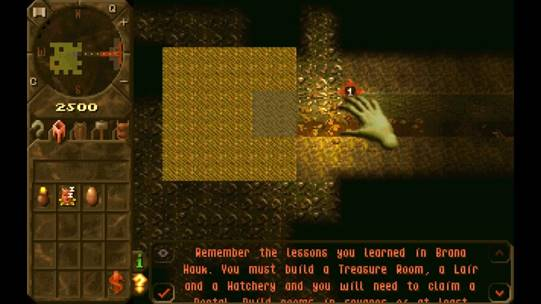
他离开之后EA加大了对牛蛙的控制，导致核心成员接连出走，随后推出的游戏品质也逐步下滑。2001年牛蛙工作室解散。大部分员工被调配去了EA UK，这家工作室后来改名为EA Bright Light，新工作室最大的贡献就是哈利波特相关的IP改编游戏，但随着哈利波特系列完结，这个工作室也没撑下去，2011也宣告了关闭。
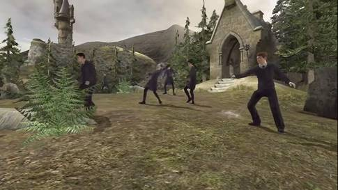
至于魔力牛本人在离开了牛蛙之后创立了狮头工作室，他们的《神鬼寓言》系列也是微软独占作品中具有代表性的一款，并且在2006年的时候被微软收购成为了旗下工作室。然而就在2016年，微软宣布取消了系列新作《神鬼寓言传奇》的开发，随后Lionhead也宣告了关闭。
NuFX/EA Chicago(1990-2007)
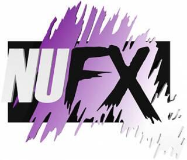
NuFX这家公司成立于1990年，在2004年被收购之后改名为了EA 芝加哥，主要是负责EA Sports的相关项目。代表作是《NBA街头篮球》系列。然而后来的一些作品销量都不如预期，于是将这些项目转移到了EA 加拿大。2007年因为公司没能达到盈利目标而被关闭。
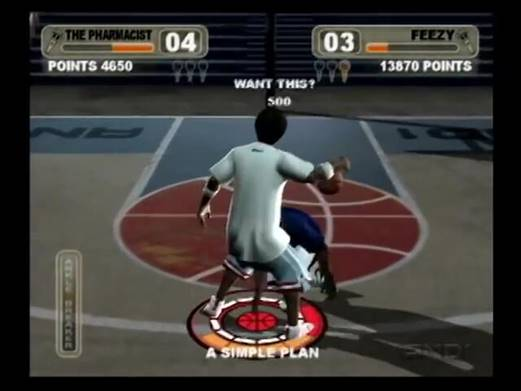
Pandemic（1998-2009）
Pandemic这家公司可能听说的人稍微少一点，他的前身是一家独立游戏开发商。创始人来自于动视，在2005年的时候和Bioware合并，并随者母公司Elevation Partners被EA并购。 这家公司推出过《破坏者》、《指环王：征服》、2005年版的《星球大战：前线2》，当然指的就不是后来Dice开发的那一款了。
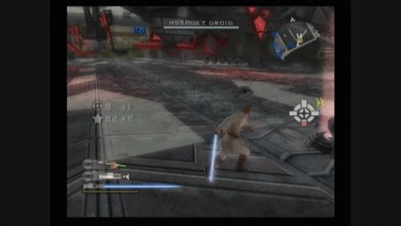
2009年EA裁员1500人，其中很多小型工作室也受到了波及，这里面就包括了“Pandemic” 。随后EA正式确认Pandemic Studios已被关闭。大部分成员被遣散，剩下一部分员工被调配到了EA洛杉矶。
出走的那批人有一部分加入了343Studio，他们后来帮微软做了《光环》系列后来几作。
Mythic（1995-2014）
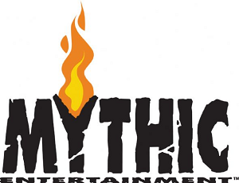
Mythic成立于1995年，因为一款MMORPG《亚瑟王的暗黑时代》而声名大噪。期间与bioware有过不少不可描述的关系，因为太混乱这里就不多说了。他们后期的《战锤Online》和《地下城守护者》的手游版也有一定名气。但是EA这一支进军网游界的部队还是在2014年宣布了关闭。
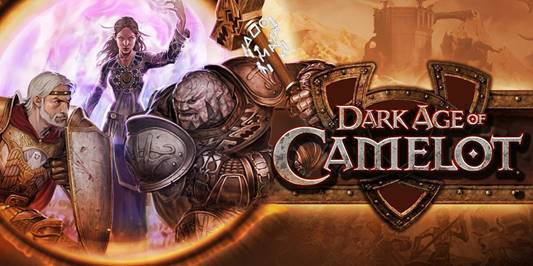
Phenomic（1997-2013）
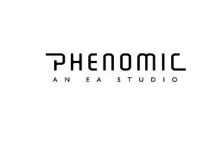
虽然跟之前提到的pandemic名字有些相似，但这家德国工作室的主要业务是F2P免费游戏方面的。他们推出过《创世纪》和《命令与征服》相关IP的即时战略页游，他们开发的另外一款基于卡牌的免费网游《BattleForge》也获得也不少好评，但还是因为盈利没达到预期在2013年被EA关闭了。
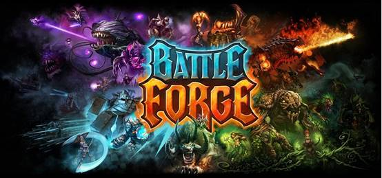
Westwood（1985-2003）
接下来要提到的西木，大概是很多玩家心中的痛，他们开发的《命令与征服》作为史上最畅销的即时战略游戏系列，大部分玩家就算没玩过也肯定听过。此外像《银翼杀手》《凯兰迪亚》《沙丘2》这些作品虽然名气稍显逊色，都有一些固定的拥趸。
西木于1998年被EA用1.2亿美元从维珍国际收购，维珍的业务包涵了各行各业，当然现在最出名的当属维珍航空了。他们当时的维珍互动娱乐部门因为业绩不佳，于是将西木连同一些小的工作室打包卖给了EA，EA完成了收购之后将他们合并一起成立了西木太平洋公司，交由西木的创始人巴雷特・斯佩里和路易斯・卡斯特尔管理。
当时的西木可谓是风头一时无两，次年发售的《命令与征服2：泰伯利亚之日》给EA带来了巨大的收益。 然而这个西木总部和太平洋分部并不在一个地方，导致他们必须在两地之间奔波，这就给他们埋下了隐患。
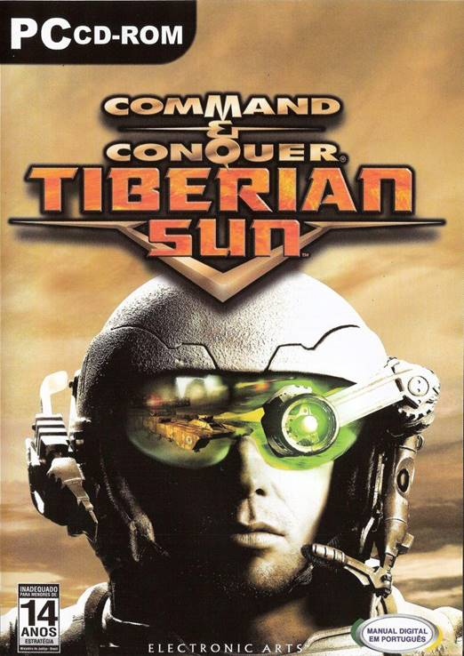
随后总部发行的3D即时战略《帝王：沙丘之战》、系列转型第一人称射击《命令与征服：叛逆者》或是在家用机上发布的《海盗：黑卡传奇》都让玩家和市场失望。而另一边太平洋分部的《红色警戒2》以及资料片《尤里的复仇》却都取得了不错的成绩，这就让西木的内部产生了分化。而EA也将业务的重心从总部转移到了分部，也调配了很多人手过去，2002年EA宣布将西木太平洋改组为EA太平洋公司。
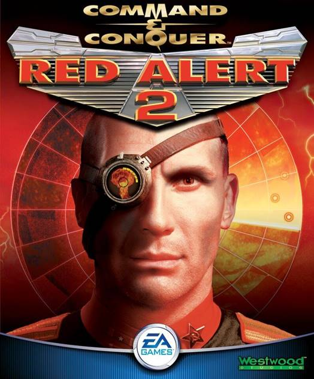
2003年，随着EA和斯佩里与卡斯特尔之间的合同到期，EA宣布关闭西木工作室，前者离开了EA创立了岩石壁画工作室，继续开发RTS游戏。后者与剩余的员工并入EA洛杉矶，他们后来也开发了《命令与征服3：泰伯利亚之战》以及《命令与征服红色警戒3》等续作，口碑和销量尚可，而到了《命令与征服4：泰伯利亚黎明》就直接把这个系列做没了。
最后一提，在2015年的TGA上，西木工作室获得了行业标杆奖，作为他们对于业界贡献的一个追忆。而次年的该奖获得者是我们上一期提到的小岛秀夫。
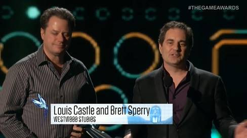
Dreamworks Interactive Danger Close/EA Los
Angeles （1995-2013）
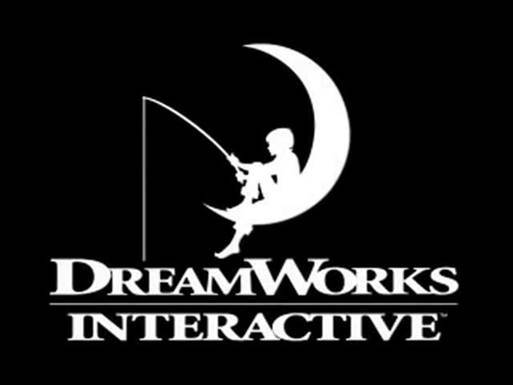
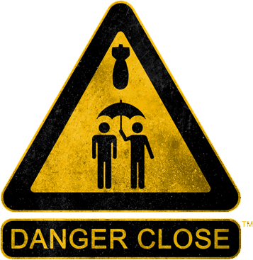
危险距离这个工作室的前身叫做DreamWorks
Interactive，就是现在大家经常听到的梦工厂。他们原先是梦工厂属下的互动娱乐部门，微软也拥有过他们少量的股份。他们之所以会引起EA的关注，正是因为《荣誉勋章》这款游戏一炮而红，在收购之后改名为EA洛杉矶，也就是之前提到西木工作室解散之后的去向。随后也开发了《荣誉勋章》和《命令与征服》相关新作。
在2010年时候《荣誉勋章》系列重启，从二战转为现代战争，工作室也是在这时候改名为危险距离。然而续作《荣誉勋章
战士》表现不佳导致系列被雪藏至今不见天日。2013年EA宣布危险距离已经不存在了，其中部分成员去了DICE继续效力。
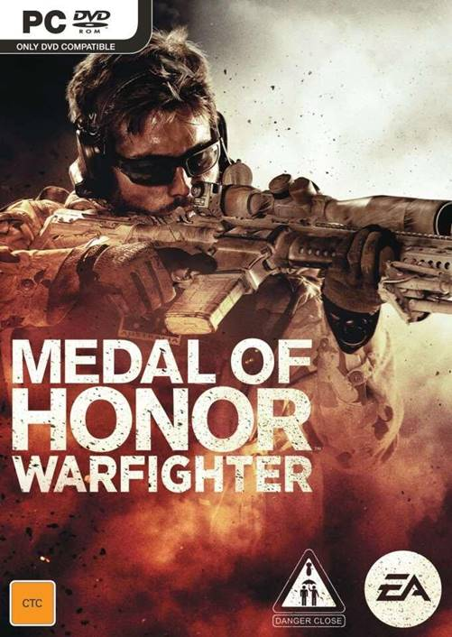
Black Box Games（1998-2013）
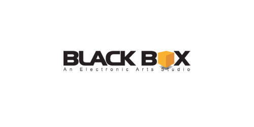
黑盒以开发赛车游戏起家，2002年被EA收购之后基本上负责了大部分《极品飞车》系列的开发， 由他们负责的那几款《极品飞车》系列作品《地下狂飙》《最高通缉》《卡本峡谷》等等都获得了不俗的评价，除此之外他们也推出了冰球类体育游戏《NHL》系列以及滑板游戏《Skate》系列。

2008年他们在温哥华的工作室被关闭，搬迁到了EA 加拿大位于本拿比的设施之中。但随后一系列的调整和重组，以及《极品飞车：无间风云》这部系列第12作的失利，最终在2013年宣布关闭，也使得主打Online的《极品飞车：世界》流产。后来部分成员去到了育碧，参与了《飚速车神》的开发。
PlayFish（2007-2013）
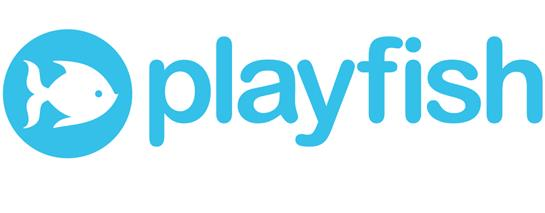
在2010年的时候曾经有一段时间非常盛行社交游戏，比如说偷菜啊这类就是最典型的，这类游戏可以说养活了当时不少游戏公司。
Playfish就是其中一家，他们在2007年成立，2009年就被EA以2.75亿迅速收购。他们《餐城》在鼎盛时期曾有一日520万的活跃用户记录，也试过17款游戏同时在线运营，《模拟人生》《模拟城市》的页游版本也是他们家出的。可以说是Facebook游戏的大拿。
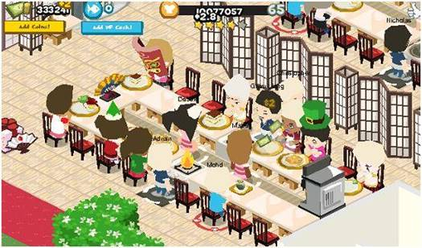
但是随着这类游戏热度的迅速减退，光是2011年就有11款游戏结束营运。到2013年草草关闭了。创始人之一后来加入了创造了《部落冲突》的Supercell工作室。
Maxis Emeryville（1987-2015）
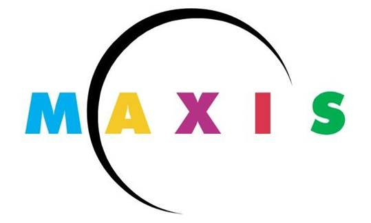
Maxis可以说是EA手下一大工作室了，他们手下的模拟系列可以说是同系列游戏的佼佼者。 其中《模拟人生》系列和《模拟城市》系列让他们名利双收。
Maxis曾经还开发过模拟农场、模拟高尔夫、模拟岛屿、模拟大楼，有些只是变化场景，有些过于偏门的游戏，但是种类还算很丰富的。EA在1997年完成了对他们的收购，2000年《模拟人生》的推出，让他们找到了一款新的摇钱树，从此这个产商基本上就只有《模拟人生》和《模拟城市》两个系列以及各种资料片了。
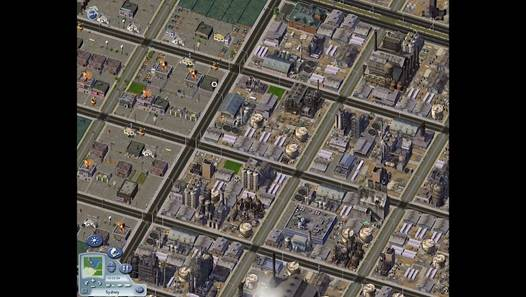
除此之外还有一款由创始人威尔赖特亲自开发的《孢子》这款模拟生物进化的游戏，虽然获得了不少的话题性但是也落到了叫好不叫座的境地。
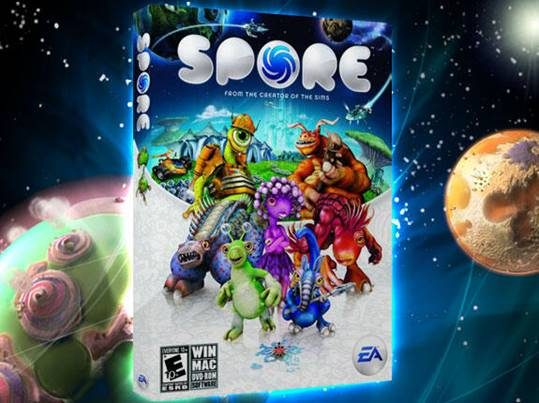
在2015年的GDC上微软宣布关闭了Maxis Emeryville的工作室，实际上这个时候Maxis以及名存实亡，核心成员早就离开EA，里面包括了创始人威尔赖特。而《模拟城市5》和《模拟人生 4》的失利更是雪上加霜。官方宣称The Sims Studio、EA 盐湖城、Maxis 赫尔辛基等等工作室依然保留，系列依然会继续开发。就在最近也宣布了《模拟人生4》的资料片《猫与狗》。而利用旧素材制作的手游版《模拟城市建造》却取得了很好的成绩。当然现在还是不是那个大家熟悉的Maxis，每个人都有自己的答案了。
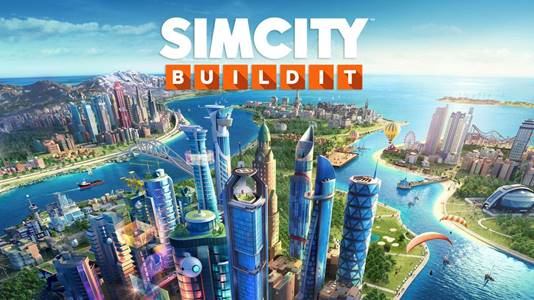
结语
如此梳理下来，这些工作室的关闭无非两个原因，灵魂人物的出走以及盈利不合预期。因为《植物大战僵尸》而出名的宝开在EA收购之后也是高开低走，近期也遇到了裁员的状况，让很多人开始怀疑他们是下一个。

EA这家在1982年就已经成立的游戏公司，凭借着庞大的销售网络成为了立业之本，也造就了他们精明的商业眼光。必须承认他们选择收购的公司都有着优秀的素质，而且也敢于花大价钱买下来，并且在买下来之后的确也给公司带来了巨大的利润。有钱真的是可以为所欲为的。与其说EA是一家游戏公司，不如说是一家披着游戏外壳的商业公司，商业公司追求利润只要手段合法其实并没有什么不对。
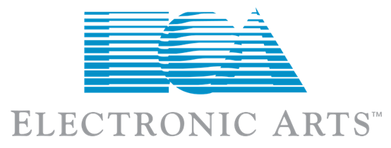
当然也不能否认这些中小企业在进入大公司之后难以适应大公司的工作流程也都受到了不同程度的压榨，投资方发行方想赶快看到成果，其实就跟我们现在见到各种企业那样。值得庆幸的是现在的EA不像过去那么激进了，旗下的Bioware、DICE也都得到了EA大力的支持。虽说Bioware耗费多年开发的《质量效应仙女座》卖相难看导致系列被冷藏，但起码他们今年拿出来的新作《圣歌》让所有玩家都为之一惊。
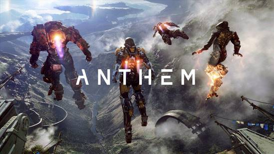
而EA现在也协助小厂商发行一些精品的独立游戏，比如说上一年的《毛线小精灵》就获得了好评无数，今年还宣布了一个EA originals计划，来扶植小型工作室，提供资金和技术，并且保护他们的IP。这种方式也更加让这些工作室和玩家们所接受。这也让人看到了一个新的气象。
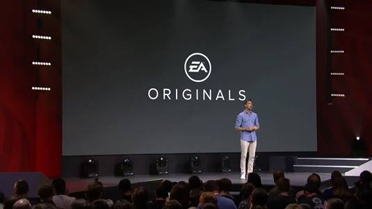